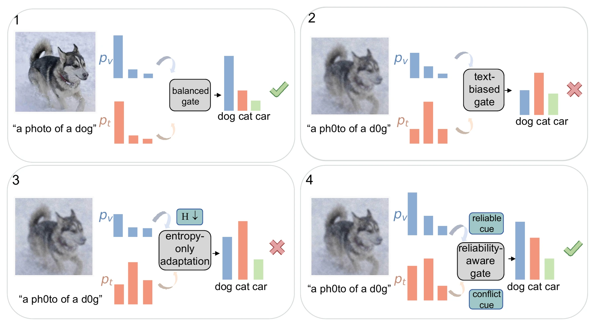

A failure mode, made explicit.
We identify the confidence–reliability mismatch behind wrong-more-confident (WMC) predictions in multimodal adaptation.
ACM Multimedia 2026 MM ’26
1 Guangdong University of Technology2 Sun Yat-Sen University
Trust the right modality.
Then sharpen the prediction.
+8.54pp
ImageNet accuracy vs. Source-only+4.59pp
ImageNet accuracy vs. Source-only41.0K
Trainable parameters · frozen encoders01 THE PROBLEM
When images and text shift differently, confidence stops being a reliable guide. A degraded modality can dominate fusion—and entropy minimization can make the wrong answer even sharper.
Biased fusion Sharper wrong prediction
Controls confidence, without checking modality reliability.Reliability-guided fusion Controlled sharpening
Regulates which modality drives the fused decision.
We identify the confidence–reliability mismatch behind wrong-more-confident (WMC) predictions in multimodal adaptation.
Majorization frames adaptation as constrained posterior de-mixing, with sufficient conditions for beneficial concentration and a modality-dominance threshold.
Keep both encoders frozen. Adapt only a lightweight fusion module, evaluated through robustness, reliability diagnostics and objective ablation.
02 THE METHOD
Separate modality selection from confidence improvement. Observable branch drift and cross-modal conflict guide the fusion gate; entropy then sharpens the fused posterior.
01 / EXTRACT EVIDENCE
Both backbones stay frozen.
02 / ESTIMATE RELIABILITY
Build a soft prior over the fusion gate.
03 / ADAPT THE FUSION
ONLY THIS MODULE UPDATESControl modality contribution.
Then sharpen the prediction.
hf = αhv + (1 − α)ht
The gate controls the relative weight of each modality.
ℒ = ℒent + λgℒgate + λdℒdiv
Sharpen confidence, constrain dominance, preserve diversity.
Doubly stochastic mixing makes a posterior less concentrated. Majorization characterizes a candidate de-mixing direction, but entropy reduction alone can still sharpen the wrong class. The analysis therefore includes ranking preservation and proximity to the clean decision margin.
These are sufficient conditions involving latent clean quantities. Anchor consistency and conflict are practical control signals; they do not certify correctness for each test sample. See Section 3.4 of the paper ↗.
03 THE EVIDENCE
The strongest gains appear when the two branches differ in reliability. Matched adaptation baselines use the same trainable parameters, isolating the effect of fusion control.
ACCURACY (%) 0 — 100
Textual: label-preserving prompt perturbations, averaged over L1–L4. The visual input remains unchanged. Three-seed averages; Table 1.
| Method | CIFAR-100C | ImageNet-C | Textual | Joint |
|---|---|---|---|---|
| Source-only | 35.80 | 25.45 | 57.97 | 21.68 |
| TENT | 37.96 | 25.64 | — | — |
| SAR | 41.42 | 29.70 | 56.84 | 25.61 |
| TPT | 36.20 | 24.90 | 56.05 | 24.07 |
| BATCLIP | 42.21 | 30.70 | 60.61 | 29.29 |
| Entropy-only | 37.96 | 26.39 | 55.40 | 21.68 |
| Entropy + Diversity | 38.10 | 26.29 | 55.38 | 21.76 |
| MG-MTTA (Ours) | 38.11 | 26.32 | 66.51 | 26.27 |
Visual: 15 common corruption types at severity 5. Textual: L1–L4. Joint: severity-5 visual corruption combined with L1–L4 text perturbations. TENT is a visual-only reference.
Where it helps. MG-MTTA leads this comparison under textual shift. BATCLIP achieves higher visual-only and joint accuracy. Fusion control complements adaptation of representations and alignment.
FAILURE DIAGNOSIS · FIGURE 3
A wrong-more-confident (WMC) event is an incorrect adapted prediction with higher confidence than before adaptation.
46.5028.21%
58.6349.07%
Entropy-only → MG-MTTA. Lower is better. Separate diagnostic stream, distinct from the L1–L4 benchmark.
STRONGEST TEXT-SIDE PROBE · TABLE 2
Under the L5 textual probe, entropy and diversity alone do not explain the recovery.
+40.40 percentage points
Entropy-only: 22.11% · Entropy + Diversity: 22.14%
L5 is a separate ablation condition and is excluded from the main benchmark.
04 A CLOSER READ
Vision–language models can face asymmetric visual and textual shifts at deployment. These shifts expose a multimodal failure mode in which an unreliable branch remains overconfident, dominates fusion, and causes entropy-based test-time adaptation to sharpen an incorrect prediction. We model this behavior as doubly stochastic posterior mixing and cast adaptation as constrained de-mixing.
Majorization-Guided Multimodal Test-Time Adaptation (MG-MTTA) freezes both encoders and updates only a lightweight fusion module. Running-anchor consistency estimates relative branch drift, while cross-modal conflict regulates modality dominance before entropy sharpening. The analysis gives sufficient conditions for entropy reduction to preserve the clean decision and an explicit threshold at which a biased modality reverses the fused ranking.
Across visual, textual, and joint shifts, MG-MTTA improves ImageNet top-1 accuracy from 57.97% to 66.51% under textual shift and from 21.68% to 26.27% under joint shift, while reducing wrong-more-confident failures. The largest gains occur under textual and joint shifts, where the two branches differ more in reliability.
05 BUILD ON THIS WORK
@inproceedings{chen2026mgmtta,
title = {Majorization-Guided Test-Time Adaptation for Vision-Language Models under Modality-Specific Shift},
author = {Chen, Lixian and Huang, Mingxuan and Chen, Yanhui and Lin, Junyi and Shi, Yang},
booktitle = {Proceedings of the 34th ACM International Conference on Multimedia},
year = {2026},
doi = {10.1145/3767308.3836429}
}